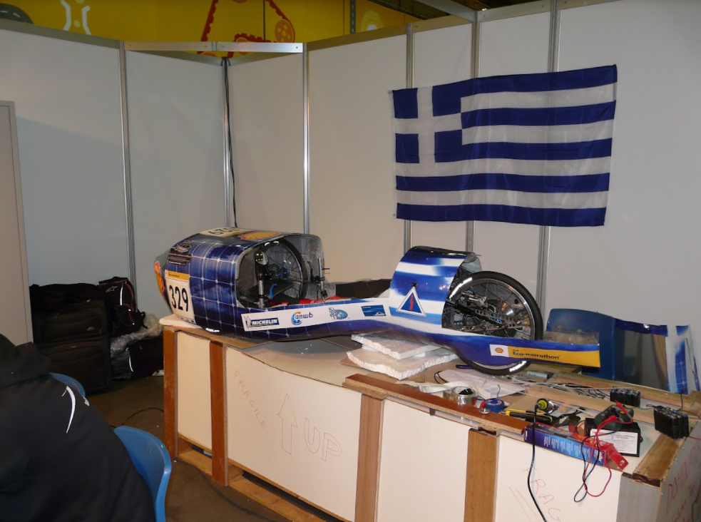
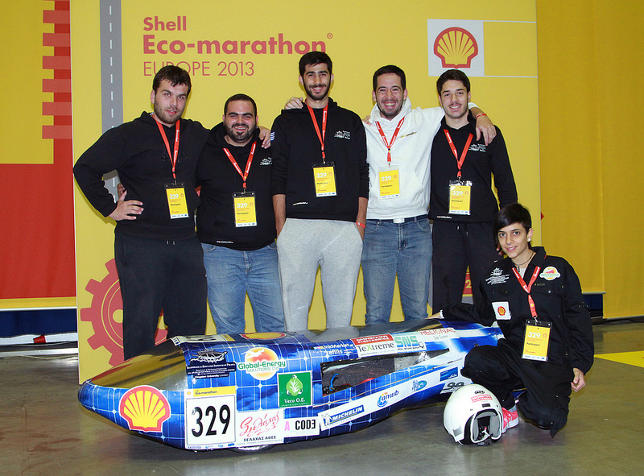
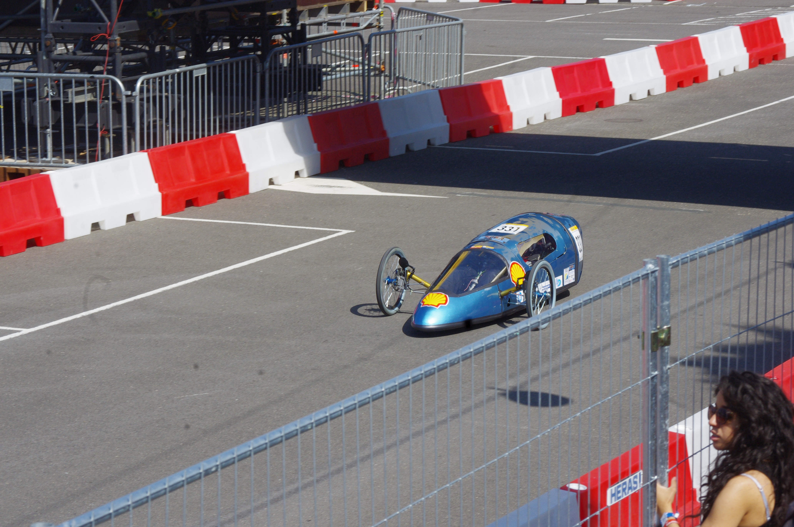
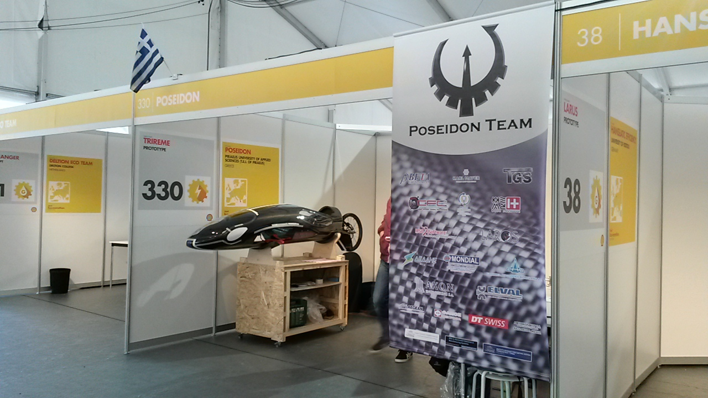
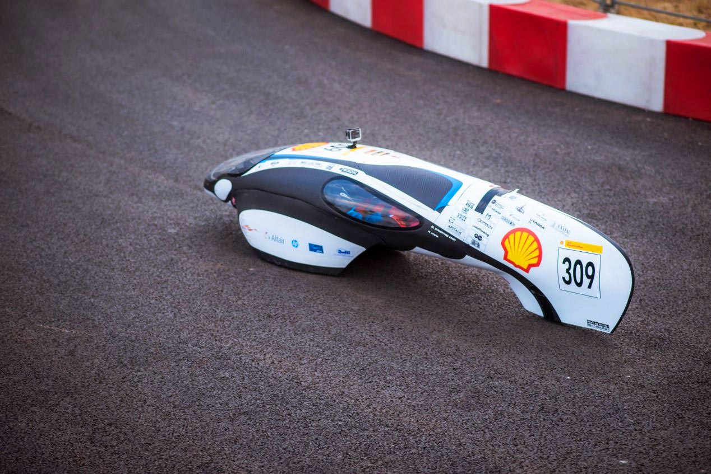
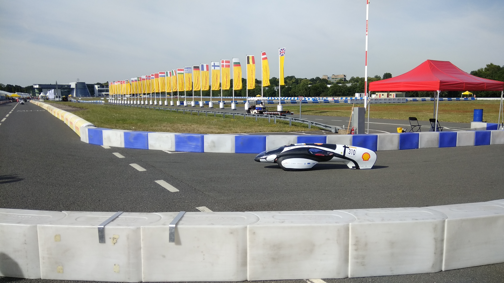
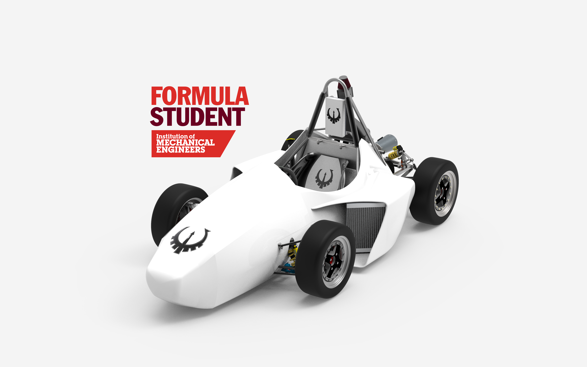

Distinctions
A timeline of the vehicles, records and results Poseidon Team has produced along the way.

First appearance at Shell Eco-marathon — Dominator
In 2012, Poseidon participated for the very first time in the Shell Eco-Marathon competition with Dominator 1, a vehicle without recorded performance due to construction problems.

Construction of a second car — Dominator 2
During the following season, our team competed once again in the Shell Eco-Marathon with the successor of the Dominator 1, Dominator 2, another vehicle without recorded performance due to construction problems.

Construction of Rena
In 2014 Poseidon constructed Rena, the first vehicle with recorded performance in the Shell Eco-Marathon.

Construction of Orca
Having collected multiple data from previous vehicles, Poseidon constructed "Orca", which would offer a lot of great moments to the team.

1st position at SEM Eastern Europe — Design Award
In 2017 Orca claimed the first place in the Shell Eco-Marathon Eastern Europe and was awarded for its design.

1st position at SEM Eastern Europe
In 2018 Orca is back in the first place of the podium in the Shell Eco-Marathon Eastern Europe.

1st participation in a Formula Student competition (Concept Class)
In 2021 Poseidon participated for the very first time in the Concept Class category of the Formula Student competition, where we claimed 51st position among 72 teams.

Orca set a new vehicle and national record
In the Shell Eco-Marathon 2023, Orca set a new vehicle record alongside a new national record with 507 km/kWh.

Participation in Formula Student East with Orion/PR23
In 2023 our team appeared for the very first time in the world of Formula Student! Poseidon participated in Formula Student East with "Orion - PR23". Our team claimed the 10th position in the overall standings, claiming 5th place at the endurance event!